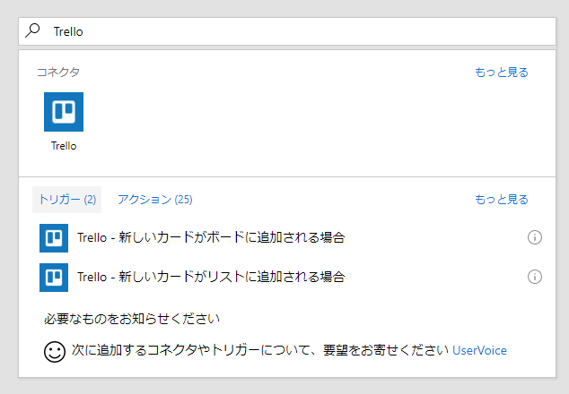
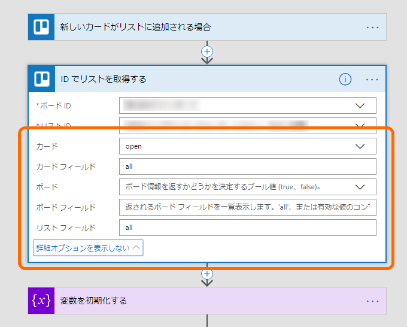
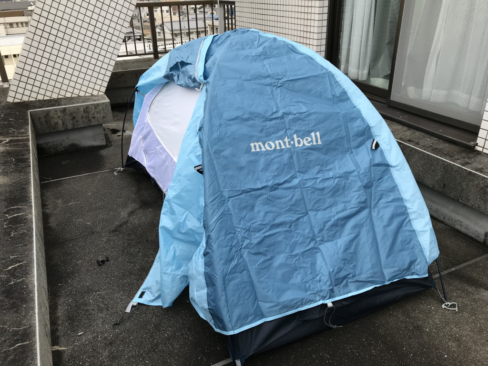
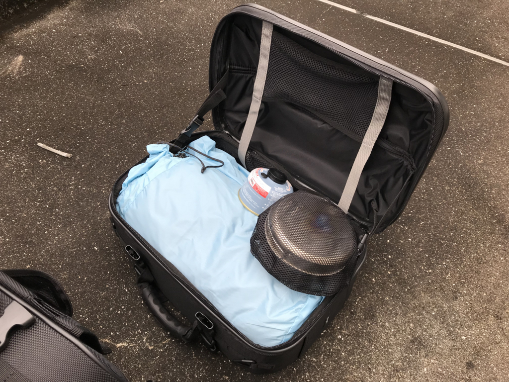
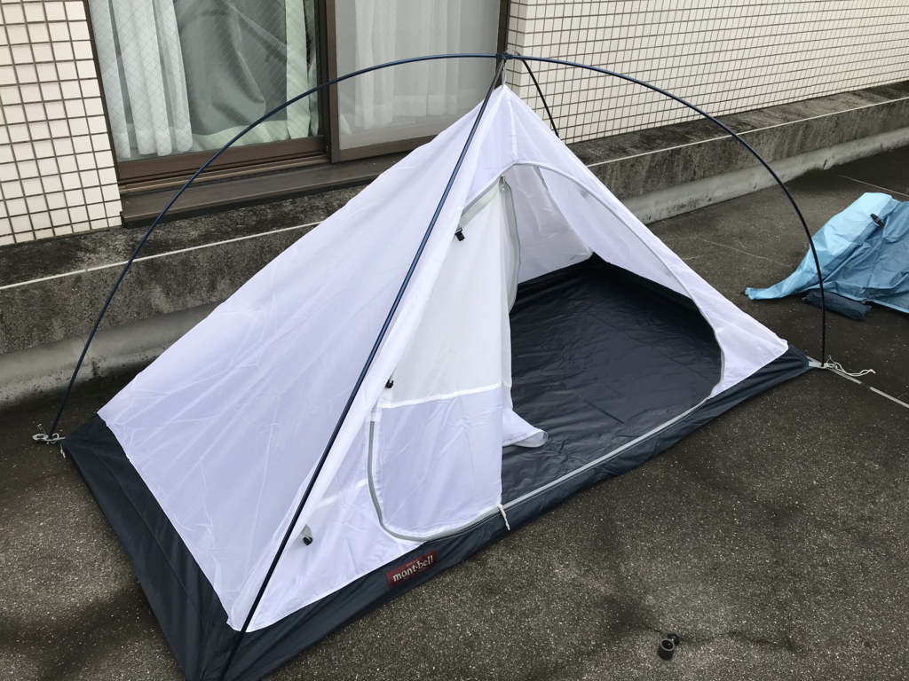

日記：金曜日は半休にして Trello＋Slack を試した＆テントを張る練習をした
公開日：
金曜日は少しだけお仕事をして、あとはダラダラと過ごした。
Trello＋Slack Powered by Mictosoft Flow
まずは、業務が回っているとなかなか手を出せない、業務フローの改善に着手（半分趣味なので、これはあまり仕事って感じはしない）。今回は「Trello にカードを作って、そのことを Slack にも伝える」というアホの極みな無駄を減らしてみた。
コードを書くのはだるいので、なるべく Microsoft Flow を使う。Microsoft Flow には Trello 関係のトリガー（If...then... の if）として

- 新しいカードがボードに追加された場合
- 新しいカードがリストに追加された場合
が利用できる。なので、「特定のリストにカードが追加されたら……」というアクションは簡単に記述できる――んだけど、その時もらえる情報は、新しく追加されたカードに関する情報だけなのだ。つまり
- 新しいカードが追加されたら Slack にそれを投げる
というフローは割と楽に書けるんだけど、
- 新しいカードがリストに追加されたら、そのリストに溜まっているカードのリストを Slack に投げる
というフローはひと手間かかる。Microsoft Flow には「ID でリストを取得する」というアクションがあって、それを使うと「リストの中のカード」が取得できるので、これを使えばよい――んだけど、ちょっとハマった。なぜか「リストの中のカード」を得ようとしても null しか返ってこない。

理由はわかってみれば簡単で、「ID でリストを取得する」アクションは既定で「リストを取得するだけ」になっていて、子のカードまで取ってきてくれない。拡張オプションで、一緒に取ってくるデータをいろいろ指定してあげなくちゃいけないんだね。とりあえず“all”とか“open”とかにしておくと、リストの中のカードまで取ってきてくれると思う。
あと、JST で現在時刻をとるのが最初よくわからなかった。Microsoft Flow って UtcNow() っていう関数が使えるのだけど（名前の通り、標準世界時で現在日時を取得する）、これって帰ってくるのが文字列名のな。AddHours(9) で日本時間にしてやろうとしても受け付けてくれない。アッーーー！ なんだこの面倒くささ！ 結局、こんなキモいコードになったんだけど、もっといい方法はないだろうか……。
convertTimeZone(utcnow(),'UTC','Tokyo Standard Time','dd/MM/yyyy HH:mm')
ちなみに、リストの結合の区切り文字なんかに改行コードをぶち込みたい場合は、以下のようにする。
uriComponentToString('%0A')\nなんかではエスケープされるのか、そのまま出力されてしまうので、最初ちょっと悩んだ。
今でもわからないのは Trello のカードについたラベルを適当にテキストとして出力する方法……C# コードだったら一瞬で頭に浮かぶのに、ブロックで記述しろっていわれると逆にわかんなくなるという……つらたん、つらたん。
テントの設営

午後は、押し入れからテントを引っ張り出して、ベランダに設営して遊んだ。このテントは、バイクでソロキャンプに行きたいなとずっと思ってて、愛媛に来る前に購入したものだ。愛媛にきてもう4年になるから、それ以上の間ずっと、押し入れで脾肉の嘆にくれていたわけやな……すまん……すまん。
ちなみに、今頃になってキャンプ道具を引っ張り出す気になったのは――べ、べつに、今期の大傑作アニメ『ゆるキャン』に触発されたからじゃないんだからねっ！ 前々からやりたいと思っていて、ちょくちょく装備を整えていたんだからねっ！ たまたまやりたくなってしまっただけなんだからねっ！
それはともかく、自分がもっていたのはどうやら、モンベルのクロノスドーム 1 型という安い一人用のテント（の旧モデル）だったみたい。塩漬けにし過ぎて、どのメーカーの、どんなモデルを持っていたのかすら覚えてなかったぜ……。
![モンベル(mont-bell) クロノスドーム1型 スカイブルー [1~2人用] 1122370](https://images-fe.ssl-images-amazon.com/images/I/4119CItkXXL._SL160_.jpg "モンベル(mont-bell) クロノスドーム1型 スカイブルー [1~2人用] 1122370")
モンベル(mont-bell) クロノスドーム1型 スカイブルー [1~2人用] 1122370
- 出版社/メーカー: モンベル(mont-bell)
- 発売日: 2012/03/02
- メディア: スポーツ用品
- この商品を含むブログを見る
広げてみたところ、傷みや欠品はなく、十分使えそう。

先週あたりに購入したバイクのサイドバッグにもキッチリ（マジで横幅ギリギリ）収まる。
 ツアーシェルケース モトフィズ(MOTOFIZZ) ヘアラインシルバー MFK-196 (容量40? 片側20?)")
タナックス (TANAX) ツアーシェルケース モトフィズ(MOTOFIZZ) ヘアラインシルバー MFK-196 (容量40? 片側20?)
- 出版社/メーカー: タナックス
- 発売日: 2014/03/18
- メディア: Automotive
- この商品を含むブログを見る
テントは快適に使いたければ（利用人数）＋1～2人にすべきというけれど、今のバイクは 250cc なので積み過ぎると前に進まなく恐れがある（いや、そこまでじゃないけどな）。クルマだったらともかく、自分にとってはちょうどいいチョイスだと思う。

設営も簡単で、ものの数分で完成した。グランドシードが見当たらなかったので、専用のものを足りないものと一緒に Amazon へ注文。この日はこれだけでいろいろ満足してしまい、ベッドに転がって本を読んでいたら、夕方前に寝落ちしてそのまま夜中過ぎまで爆睡してしまった。日付が変わって今日は、新居浜までおいしいおいしいお寿司を食べに行く。
なんと無回転寿司だぞ！！